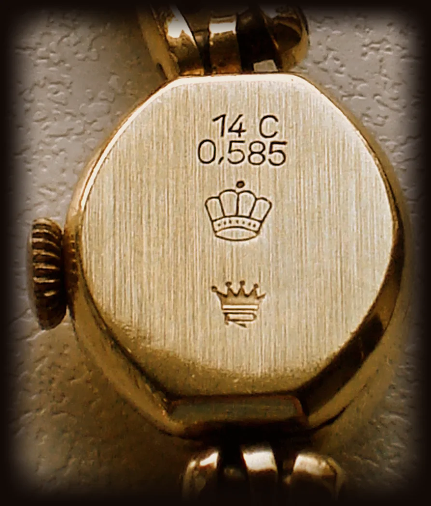
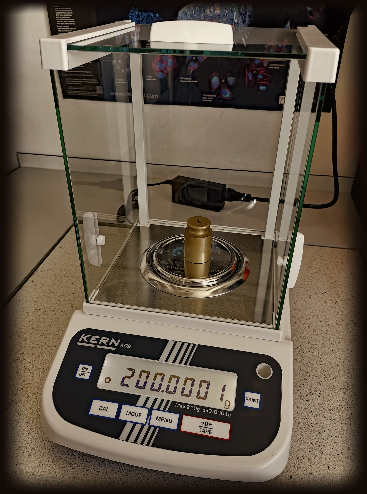

Így zajlik a becslés
Pár perc, az Ön szeme előtt, és semmire nem kötelez. Mindent megmutatunk, amit mérünk, és megmondjuk, miből jön ki az ár.

585
ezrelék, 14 karátos arany
1Megnézzük
Megkeressük a fémjelet, megnézzük az anyagot és az állapotot. Ha kell, nagyítóval, a pultnál vagy az Ön asztalán. A tárgy végig az Ön szeme előtt marad.
999,9
ezrelék, színarany
2Bevizsgáljuk
Ha nincs fémjel, roncsolásmentesen vizsgáljuk meg, valóban arany vagy ezüst-e, és milyen finomságú. Az eredményt megmutatjuk.

0,1g
pontossággal, a kijelzőt Ön is látja
3Lemérjük
Hitelesített mérlegen, tizedgrammra. A kő, a rugó és minden nem nemesfém részt levonunk, és megmondjuk, mennyit.
Ft
forintban, a helyszínen
4Ajánlatot teszünk
Elmondjuk, mennyit adunk, és miből jön ki: finomság, súly, aznapi árfolyam, vagy a tárgy gyűjtői értéke. Ha elfogadja, azonnal fizetünk. Ha nem, a tárgy Önnél marad.
Mit hozzon magával
Három dolog, és a becslés gyorsabb.
- A tárgyat, ahogy van.Ne tisztítsa, ne javíttassa meg előtte, és ne válogassa szét a dobozt.
- Ami vele jár.Doboz, tanúsítvány, számla, régi papírok. Ha megvan, sokat segít.
- Mindent, amiben bizonytalan.Ha nem tudja, mi az, éppen ezért érdemes megmutatni. A becslés díjmentes, és semmire nem kötelez.
Gyakori kérdések
Ha a válasz nincs itt, hívjon: 06 20 620 1377
Kell-e időpont a becsléshez?
Az üzletbe nyitvatartási időben időpont nélkül is bejöhet. Házhoz menéshez telefonon egyeztetünk időpontot.
Mennyibe kerül a becslés?
Semmibe. A becslés díjmentes az üzletben és Budapesten a házhoz menésnél is, akkor is, ha nem ad el semmit.
Mi történik, ha nem fogadom el az ajánlatot?
A tárgy Önnél marad, és nem tartozik semmivel. Gondolkodhat rajta, és később is visszajöhet.
Hogyan fizetnek?
Megegyezés után azonnal, a helyszínen fizetünk.
Telefonon is tudnak árat mondani?
Nagyjából igen: ha elmondja, mi az, milyen fémjelet lát rajta és nagyjából mennyi, megmondjuk, mire számíthat. A pontos ajánlat a bevizsgálás után születik.
Kimennek hozzám akkor is, ha csak egy-két tárgyam van?
Igen, egy gyűrűért is. Budapesten a kiszállás díjmentes, az időpontot telefonon egyeztetjük.